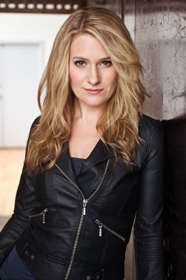
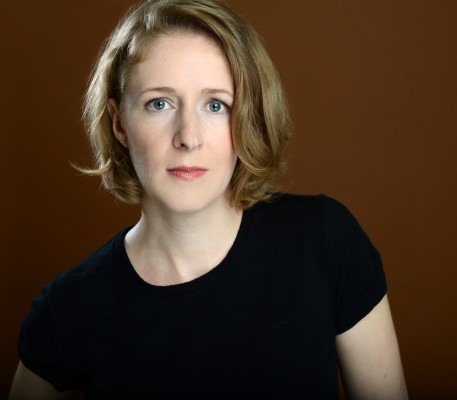
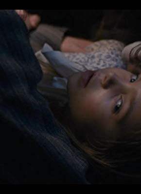

IMDB-Wertung: 8.4 / 10
IMDB-Wertung: 8.4 / 10  Metascore: 0
Metascore: 0 
Anne, eine Waise, hat ihre Kindheit in Heimen und bei Fremden verbracht. Versehentlich wird das junge Mädchen nun zu einem älteren Geschwisterpaar in eine Kleinstadt geschickt. Allerdings haben die Cuthberts eigentlich einen Jungen erwartet, der ihnen auf der Farm hilft. Im Laufe der Zeit gewinnt die 13-jährige Anne mit ihrer unvergleichlichen Art die Herzen ihrer neuen Pflegeeltern und findet Freunde und Liebe.
Jahr: 2017
Dauer: 88 Minuten
FSK:
Land: Kanada Studio: NetflixTonspuren: DD5.1 - ,
Untertitel: Deutsch, Englisch,
Auflösung: 720p (1280x720) Größe: 2805 MB
Genre: Drama, TV-Serie
Regisseur: Paul Fox,  Helen Shaver,
Helen Shaver,  Amanda Tapping, Ken Girotti, Anne Wheeler
Amanda Tapping, Ken Girotti, Anne Wheeler
Drehbuch: Lucy Maud Montgomery, Moira Walley-Beckett, Kathryn Borel, Naledi Jackson, Alina Mankin
Soundtrack:
Darsteller:
- Amybeth McNulty als Anne Shirley-Cuthbert, 17 episodes, 2017-2018
 Geraldine James als Marilla Cuthbert, 17 episodes, 2017-2018
Geraldine James als Marilla Cuthbert, 17 episodes, 2017-2018- R.H. Thomson als Matthew Cuthbert, 17 episodes, 2017-2018
- Dalila Bela als Diana Barry, 17 episodes, 2017-2018
- Lucas Jade Zumann als Gilbert Blythe, 15 episodes, 2017-2018
- Aymeric Jett Montaz als Jerry Baynard, 14 episodes, 2017-2018
- Kyla Matthews als Ruby Gillis, 14 episodes, 2017-2018
- Helen Johns als Mrs. Eliza Barry, 14 episodes, 2017-2018
- Christian Martyn als Billy Andrews, 13 episodes, 2017-2019
- Miranda McKeon als Josie Pye, 11 episodes, 2017-2018
 Philip Williams als Thomas Lynde, 11 episodes, 2017-2018
Philip Williams als Thomas Lynde, 11 episodes, 2017-2018- Ella Jonas Farlinger als Prissy Andrews, 11 episodes, 2017-2018
- Glenna Walters als Tillie Boulter, 10 episodes, 2017-2018
- Jacob Horsley als Charlie Sloane, 10 episodes, 2017-2018
- Dalmar Abuzeid als Sebastian 'Bash' Lacroix, 9 episodes, 2018
- Cory Gruter-Andrew als Cole Mackenzie, 8 episodes, 2018
-  Janet Porter als Mrs. Andrews, 8 episodes, 2017-2018
- Deborah Grover als Josephine Barry, 5 episodes, 2017-2018
- Brenda Bazinet als Jeannie, 4 episodes, 2017-2018
- Cara Ricketts als Mary, 3 episodes, 2018
- Krystina Bojanowski als Mrs. Morrison, 3 episodes, 2017-2018
-  Martha Girvin als Mrs. Spencer, 1 episode, 2017
- Rachel Cairns als Mrs. Phelan, 1 episode, 2017
 Jonathan Holmes als 12 episodes, 2017-2018
Jonathan Holmes als 12 episodes, 2017-2018- Kyle Meagher als 10 episodes, 2017-2018
-  Ryan Kiera Armstrong als 10 episodes, 2017-2019
- Daimen Landori-Hoffman als 10 episodes, 2017-2018
- Stephen Tracey als 9 episodes, 2017-2018
- David Ingram als 6 episodes, 2017-2018
- Taras Lavren als 5 episodes, 2017-2018
- Kent Staines als 4 episodes, 2017-2018
- Katelyn Wells als 4 episodes, 2017-2018
- Trenna Keating als 4 episodes, 2018
- Avery Trask als 4 episodes, 2017-2018
 Daniel Kash als 3 episodes, 2017-2018
Daniel Kash als 3 episodes, 2017-2018- Neil Foster als 3 episodes, 2017-2018
- Deborah Tennant als 3 episodes, 2018
- Franckie Francois als 3 episodes, 2018
- Ian D. Clark als 2 episodes, 2017
 Joanna Douglas als 2 episodes, 2018
Joanna Douglas als 2 episodes, 2018- Cassidy Fox als 2 episodes, 2017-2018
- Wayne Best als 2 episodes, 2017
- David Frisch als 2 episodes, 2018
 Dan Warry-Smith als 2 episodes, 2017
Dan Warry-Smith als 2 episodes, 2017- Tammy Isbell als 2 episodes, 2018
 Dan Lett als 2 episodes, 2017-2018
Dan Lett als 2 episodes, 2017-2018- Catherine McNally als 2 episodes, 2017
- Fiona Byrne als 2 episodes, 2017
- Brian Bisson als 2 episodes, 2018
 Jim Annan als 2 episodes, 2017
Jim Annan als 2 episodes, 2017
Datei: X:\HD-Serien\Anne\S01\Anne S01E01 Und ihr Wille soll auch über ihr Geschick entscheiden.mkv seit 19.06.2019
Festplatte: HD Serien(A-H)
 Es gibt insgesamt 182 Filme in der Gruppe 'HD-Serien'
Es gibt insgesamt 182 Filme in der Gruppe 'HD-Serien'
")